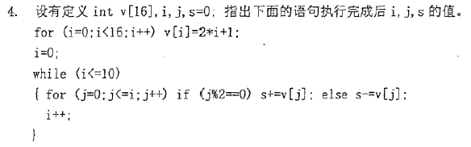

第一题
1.在C99标准中，类型int和类型long long之间的区别是什么?
2.在程序中注解的作用是什么?
3.使用库函数时包含相应的头文件的目的是什么?例如，使用sqrt函数要包含math.h头文件

5.你经常使用的C语言编译器是哪一个?C程序的开发环境是哪一个?
在调试程序时设置断点的目的是什么?
(1)占用空间不同，int类型为4字节，而long long 类型为8字节。相应的，可表示的数据范围也不同，int类型可以表示[-231,231-1]的数据，而long long 表示[-263,263-1]的数据
(2)
在程序的开头加入注释，可以写明程序的一些必要信息，如创建者，时间，程序实现的功能以及参考来源等内容。
程序代码当中适当加入一些注释，可以增加程序的易读性，便于与共同开发者进行交流。
(3) 包含头文件在编译时相当于对指定库函数进行声明，这样在程序编译过程时才能调用到正确的函数，
(4)
i=11
j=11
s=6
(5)
C语言的编译器gcc，（还有clang,cl,mscc等），开发常用编辑器vim和sublime Text，或者集成开发环境有Visual Studio 2017, codeblocks, dev C++等。(注意，不要将集成开发环境、编译器、编辑器等概念混淆)。
设置断点是为了在程序调试时监视变量的变化以及程序的流程，常用于循环的边界调度或递归结构的调试。
读程序写结果
模拟掷两颗骰子的点数之和，运行TIMES=6000000次的试验，程序中可以认为频率等于概率，计算各点数之和的概率，可知程序的输出
1:0.00 2:0.02 3:0.05 4:0.08 5:0.11 6:0.13 7:0.16 8:0.13 9:0.11 10:0.08 11:0.05 12:0.02 13:0.00
三、计算tribonacci数列
tribonacci数列定义为
T(0)=0,T(1)=T(2)=1 T(n)=T(n-1)+T(n-2)+T(n-3) (当n>2时)1.定义一个递归函数计算 T(n)
(1)
int Tribo(int n)
{
if (n==0)
return 0;
if(n==1 || n==2)
return 1;
return Tribo(n-1)+Tribo(n-2)+Tribo(n-3);
}
(2)
int Tribo2(int N)
{
if(N==0)
return 0;
else if(N==1||N==2)
return 1;
else{
int n,n1,n2,s=2;
n=1;
n1=1;
n2=0;
while(N>2)
{
s=n+n1+n2;
n2=n1;
n1=n;
n=s;
N--;
}
return s;
}
}
(3) 递归函数做192次加法，非递归做20次加法，非递归的函数运算快。
(4) 递归函数会占用较多内存空间以保存中间调用的过程，n稍大就会因内存栈帧用尽而不能运算。 非递归函数则可能因数据超出数据范围而计算出错误的结果。
第四题，按要求写split函数
设计split传入3个参数，*string是待分割的字符串，key是分隔符，a[][]是目标数组
index记录总共分割的次数，最后分割次数作为split的返回值
#include <stdio.h>
int split(char* string,char key,char a[100][100])
{
int i,index=0,k=0;
for(i=0;string[i]!='\0';i++)
{
if(string[i]!=key)
{
a[index][k]=string[i];
++k;
}
else
{
a[index][k]=0;
index++;
k=0;
}
}
return index;
}
第五题按要求写程序 对文本中的字符串排序
#include <stdio.h>
#include <stdlib.h>
#include <string.h>
#define MAXLENGTH 10000
struct lineNode
{
int hashValue;
int length;
char *contents;
};
int hash(char *s)
{
int i,z=0;
for(i=0;s[i];i++)
{
if(('0'<=s[i]&& s[i]<='9')||'a'<=s[i] && s[i]<='z')
z+=s[i];
if(z>=10007)
z%=10007;
}
return z;
}
int cmp(const void*a,const void *b)
{
struct lineNode m1=*(struct lineNode*)a,
m2=*(struct lineNode*)b;
if(m1.hashValue!=m2.hashValue)
return m1.hashValue-m2.hashValue;
else if(m1.length!=m2.length)
return m2.length-m1.length;
else
return strcmp(m2.contents,m1.contents);
}
int main(int argc, char *argv[])
{
char msg[MAXLENGTH+1];
int i,N=atoi(argv[1]);
FILE *fin,*fout;
struct lineNode *data;
data=(struct lineNode*)malloc(N*sizeof(struct lineNode));
fin=fopen("data.in","r");
for(i=0;i<N;i++)
{
fgets(msg,MAXLENGTH,fin);
if(msg[strlen(msg)-1]=='\n')
msg[strlen(msg)-1]=0;
data[i].hashValue=hash(msg);
data[i].length=strlen(msg);
data[i].contents=(char*)malloc((strlen(msg)+1)*sizeof(char));
strcpy(data[i].contents,msg);
}
fclose(fin);
qsort(data,N,sizeof(data[0]),cmp);
fout=fopen("data.out","w");
for(i=0;i<N;i++){
fputs(data[i].contents,fout);
fprintf(fout,"\n");
}
fclose(fout);
return 0;
}
六、已知线性表与一个索引函数，画出索引表.
根据索引函数画索引表
七、双向链表中删除值为y的结点的函数
此解法是带表头的双向链表的操作。
void Remove(List *head,int y)
{
List *prev,*curr,*succ;
curr=Head->Next;
prev=head;
while(curr)
{
if(curr->Data==y)
{
succ=curr->Next;
prev->Next=succ;
succ->Last=prev;
free(curr);
curr=prev;
}
prev=curr;
curr=curr->Next;
}
}
八、填空，将串s2加到串s1的末尾形成新串s1
(1)>= (2)<=strlen(s2) (3)k++ (4)k (5)k
九、分别写出对线性表(10,8,12,7,5)用快速排序和归并排序的每一趟过程
QuickSort: (10,8,12,7,5) ((8,7,5),10,(12)) (((7,5),8),10,12) (5,7,8,10,12) MergeSort: ((8,10),(7,12),5) ((7,8,10,12),5) (5,7,8,10,12)
十、推导二维数组u[9][6]按行存储的地址公式（每元素占s个存储单元）
&a[i][0]=&a[0][0]+6*i*s;
&a[i][j]=&a[i][0]+j*s=&a[0][0]+6*i*s+j*s;
十一、一棵二叉树T的中序遍历序列是BHECFG，前序为HBCEFG。画出求解T的整个过程
简单，图示从略
十二、填空，完成在一棵查找树中查找一个值为a的函数
(1)!= (2)*p_q (3)lchild (4)rchild
十三、画出从顶点出发到各顶点的最短路径长度，要求画出一个表给出每步的求解步骤
| 扫描次数 | 终点 | 结果 | |||||||
|---|---|---|---|---|---|---|---|---|---|
| 2 | 3 | 4 | 5 | ||||||
| dist | path | dist | path | dist | path | dist | path | ||
| 1 | 1 | 1 | ∞ | -1 | 5 | 1 | 4 | 1 | (1,2) 1 |
| 2 | 2 | 2 | 5 | 1 | 3 | 2 | (1,3) 2 |
||
| 3 | 5 | 1 | 3 | 2 | (1,5) 3 |
||||
| 4 | 5 | 1 | (1,4) 5 |
||||||